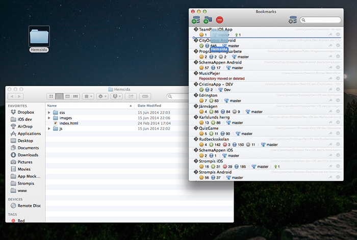

När du programmerar är det viktigt att din kod hela tiden är säker och att du kan gå tillbaka om du gör fel eller vill ändra något.
Därför finns det ett perfekt verktyg som gör så att du kan gå tillbaka om du gör fel - Git.
Börja med att registrera dig på Github. Skapa sedan ett nytt repository genom att trycka på New Repository uppe i högra hörnet.
Döp det till ditt GITHUBNAMN.github.io (i mitt fall jonathanort.github.io).
Ladda sedan ner SourceTree och starta programmet.
Dra in mappen med din hemsida i sourcetree och tryck create.
Kryssa i rutan med Unstaged files och tryck commit längst uppe till vänster.
Du kommer då behöva skriva in ett meddelande för din commit. Detta är vilka ändringar som har gjorts med då detta är vår första så är "First commit" ett bra meddelande.
Nu ska vi ladda upp sidan till github så den kan nås av hela värden.
Gå tillbaka till github och projektet du skapade och kopiera ditt url, det borde se ut något liknande mitt men med ditt namn istället :).
Högerklicka sedan på remotes i vänstra spalten och välj new remote. Välj ett namn och klistra in ditt url från github där under. Skriv även in ditt användarnamn.
Tryck sedan push längst upp i SourceTree och skriv in ditt lösenord till github.
Nu kommer din sida inom kort ligga på DITTNAMN.github.io.
Varje gång du ändrar något på sidan kan du nu trycka commit igen, skriva vilka ändringar du har gjort och sen pusha projektet igen. Detta gör det möjligt att samarbeta i ett team utan att skriva över någon annans ändringar och används i nästan alla stora företag. Om du kommer på att du vill gå tillbaka till en tidigare version så kan du lätt välja den och gå tillbaka.
Om du stöter på några problem så kan du självfallet fråga mig om hjälp :)